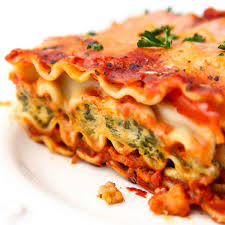

Vegan Lasagna

Description
Enjoy a flavorful blend of red bell peppers, spinach, mushrooms, vegan ricotta, and savory tomato sauce. Topped with fresh basil and nutritional yeast, it's a delicious plant-based twist on a classic Italian dish.
Ingredients
Sauce Ingredients
- 1 red onion, chopped
- 3 cups mushrooms, chopped
- 2 zucchini, chopped
- 2 red bell peppers, chopped
- 1 large kale bushel, chopped
- 2 jars of marinara sauce
- 1 can crushed or diced tomatoes
- 1 tablespoon basil
Easy Tofu "Ricootta"
- 4 blocks firm tofu
- 2 tablespoon italian seasoning
- 1⁄2 teaspoon black pepper
- 2 teaspoon garlic powder
- 3 tablespoon nutritional yeast
- 1 teaspoon salt
Other Ingredients
- 2lbs Lasagna sheets
- 2 pouches vegan shredded cheese
Directions
- Preheat oven to 375°F and have a 9x13" baking dish ready!
- Add chopped onion and mushrooms to large pot, saute until soft.
- Add the chopped bell pepper and zucchini, let veggies saute for about 5-7 minutes.
- Add the kale and marinara sauce and diced tomatoes. Saute for a few more minutes until sauce is evenly heated. Remove from heat.
- Crumble tofu into medium size bowl.
- Add italian seasoning, black pepper, garlic powder and nutritional yeast and mix together well.
- Cook your lasagna sheets if you have not done so already.
- Now its time to layer! Start by adding sauce to the baking dish, then add a layer of noodles. Crumble tofu ricotta on top and generously cover with sauce. Repeat steps until you have used everything. When you come to the last noodle layer, cover with remaining tofu and sauce and place vegan cheese on top - sprinkle on some nutritional yeast and basil.
- Bake for about 45 minutes. Serve hot or cold!